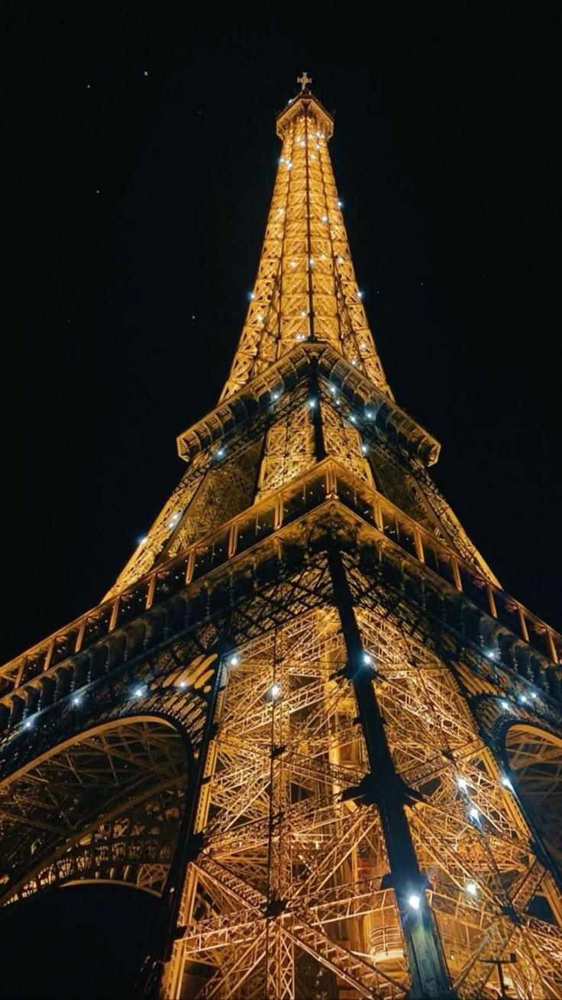
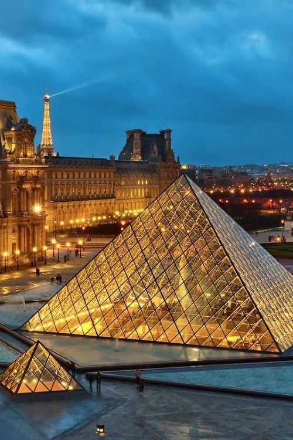
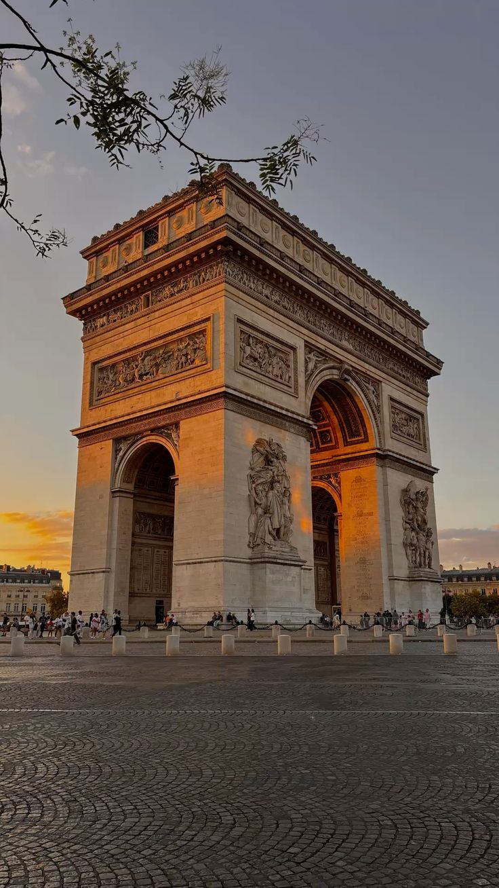

PARIS
A world-renowned, romantic, and historic city, famous for its iconic landmarks, artistic treasures, and vibrant cafe culture



About Paris
Paris charms with its grand, tree lined boulevards, elegant Haussmann architecture, and timeless icons like the iron lattice of the Eiffel Tower and the glass pyramid of the Louvre. The city feels like a living canvas where cozy cafés line every cobblestone corner, inviting slow mornings fueled by espresso and long, wandering conversations that stretch into the afternoon. While world class museums, legendary fashion houses, and the iconic green bookstalls along the banks of the Seine celebrate a deep-seated love for art and literature, the city never feels stuck in the past. By day or night, the City of Light blends romance, history, and modern creativity effortlessly, making every stroll through its arrondissements feel like a scene from a classic film.
Why I'm Drawn to Paris
The reason I am so drawn to Paris is my desire to immerse myself in a city that treats beauty and culture as a way of life, not just an attraction. I want to go there to experience the "flâneur" lifestyle to get lost in the winding streets of Montmartre, tracing the steps of artists like Picasso and Dalí, and to feel the creative energy that still pulses through the city’s many galleries and ateliers. I am captivated by the idea of sitting in a traditional bistro, surrounded by the hum of French chatter, and truly understanding why this city has inspired poets and dreamers for centuries.
Why I Want to Visit Paris
I want to visit Paris because it represents the ultimate intersection of intellectual depth and aesthetic grace. I want to stand at the top of the Arc de Triomphe as the city lights begin to flicker on, witnessing the transition of Paris into its nocturnal, shimmering self. Whether it is exploring the vast halls of the Musée d'Orsay or simply enjoying a fresh baguette by the Canal Saint-Martin, I want to discover the "Parisian soul" that values quality, style, and the pursuit of passion. For me, Paris isn't just a travel destination; it is a reminder that life is meant to be savored, one beautiful moment at a time.